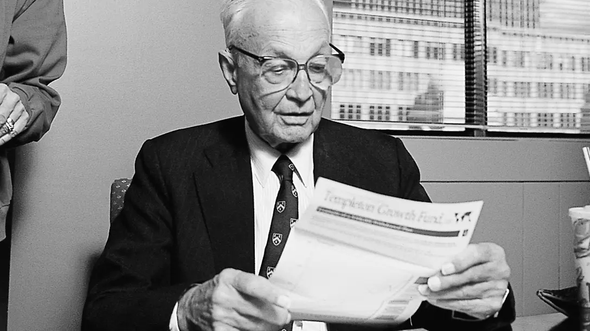

像一位在全球地图上捡遗漏机会的人。更愿意用少量仓位布在不同区域，而不是全押最热门市场。
03003、03133、03037 这类更适合全球逆向框架的大类核心资产
最喜欢在市场最悲观的阶段慢慢进。不是因为知道最低点，而是因为那时赔率往往最好。开仓更强调跨周期眼光，愿意在别人不愿看的一篮子资产里先埋伏。
仓位会分阶段上，不急着一步到位。先小仓试探市场定价是否真的过度悲观，确认后再逐步放大，把逆向判断变成更完整的持仓。
当市场重新发现这类资产、估值回到合理甚至偏热的区间时，会逐步兑现。邓普顿最典型的成功，不在于抄到最低，而在于在全世界重新乐观之前先站进去。